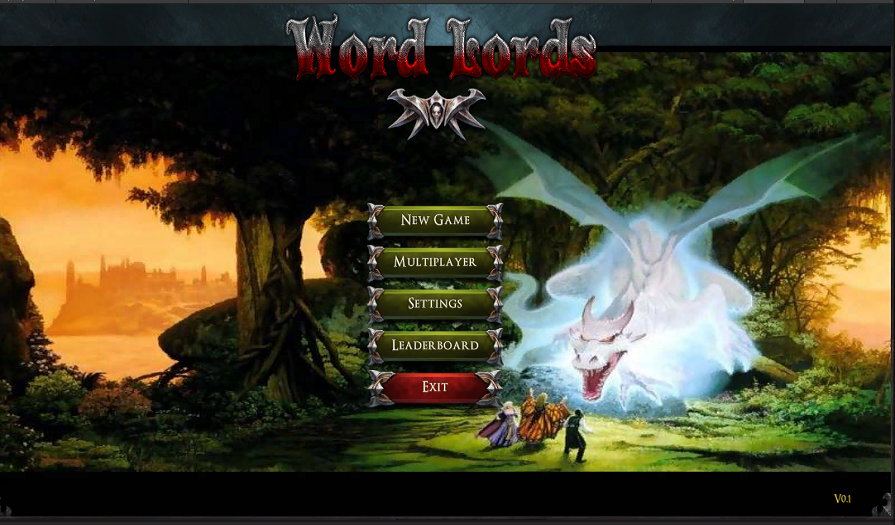
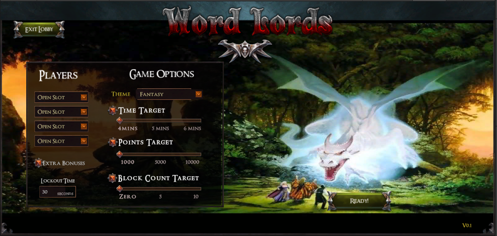
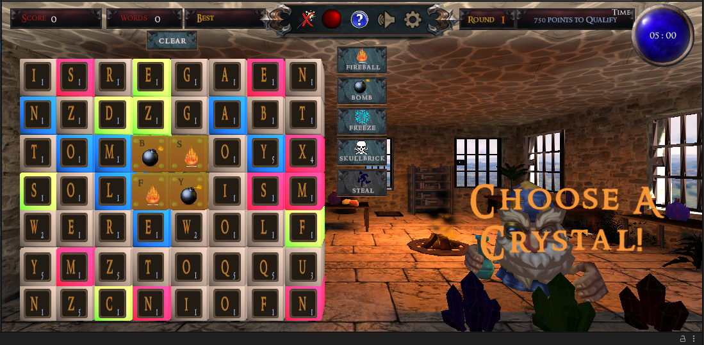
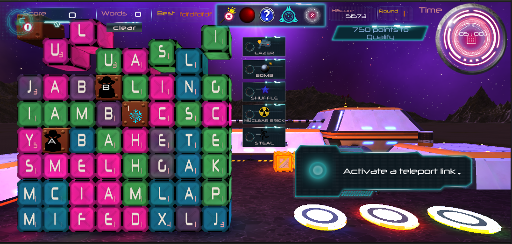
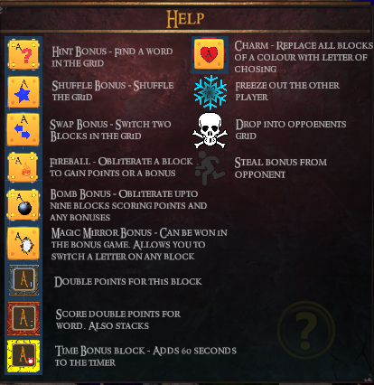

Word Lords

frontend

options / settings

fantasy theme

sci-fi theme

powerups
My work included writing many of the exporters for the baked lighting as this was running on fairly low end mobile devices. In addition I worked on many of the shaders including a customisable water shader and porting of these to unity 5.
<< Back